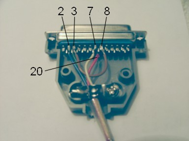
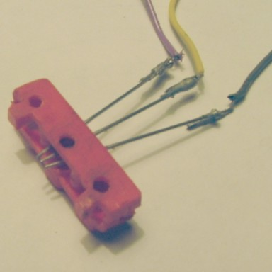
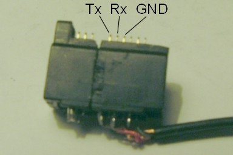
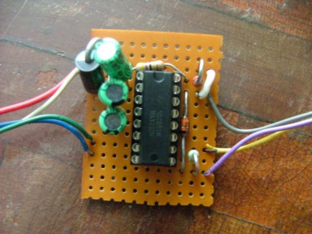

La idea surgió tras adquirir un Nokia 3100; un móvil muy majo, baratito, que acepta imágenes, midis y programas java. Lo compré con la intención de tenerlo como si fuera un pequeño portátil, con mis fotucas, mis midis, y la intención de añadir algún juego java de mi cosecha. Tan fácil como conectar el pc al movil y transferir datos...
Pero no todo el monte es orégano, y el primer problema con el que topé fue el más evidente: el cable de datos. Oh no, el cable de datos DKU-5 de Nokia cuesta (original) unos 40 euros... hummm... puñetas... Al parecer este cable de Nokia se conecta al puerto USB y crea un puerto serie virtual, comunicándose con el teléfono de un modo serial, obviamente. Tras este chasco “completely unaffordable” pensé en construir mi propio cable de datos, no sin antes mirar cables no-originales. Encontré varias webs, de las que destaco estas dos:
El problema de esto, es que a pesar de su precio más barato, en caso de tener problemas pues ya estás jodido: devuelve a Hong-Kong en menos de 7 dias tu cable defectuoso... o que funcione bien y al cabo de un tiempo deje de funcionar el cable, o lo que es peor, el móvil... Uno no está para muchos sustos económicos, ademas a todos siempre les va bien hasta que a uno lo compra y es el que va mal. De oídas todo funciona de maravilla, al primo del colega de tu amigo que tiene ese cable todo le va bien, uno no lo vé, y se lo cree, luego resulta que se complica sobremanera.
Lanzado a la construcción de mi propio cable de datos serie, conectable al puerto serie RS-232 del PC, me puse a buscar esquemas en internet. Por desgracia esto de los móviles esta en mucho auge, y la demanda de información la cobran. Si, si, hay webs que por querer mirar un esquema de interfaz te exigen que seas cliente! Bueno, busqué y busqué y encontré lo que queria, para otros modelos de movil, pero ello era.
http://www.panuworld.net/nuukiaworld
http://www.datasheetcatalog.com/datasheet/MA/MAX232.shtml
En el primer enlace está el esquema de un interfaz RS-232 a CMOS. Yo lo he adaptado para conectarse con un DB-25, al COM2. Mi COM1 con el conector DB-9 está ocupado por el ratón.
Un grave problema es que la clavija que se conecta al móvil no la venden por ningún sitio. Pensé en adquirir un kit “manos libres” y aprovechar el conector, peeeeero esta gente es muy lista, y se las saben todas. El conector que se vende le faltan exactamente los pines que transfieren datos, y en mi ciudad no he encontrado ningún adaptador de estos que no sea Nokia original y que pudiera tener todos los pines. De todos modos no me desanimé e hice un conector con los 3 pines que necesitaba totalmente casero, primero con alfileres y cello, y despúes tallando una carcasa en una pieza de Lego.
ACTUALIZACIÓN: he comprado un destornillador de tipo Torx (estrella de seis puntas), 4,55 €, y he abierto el móvil. Bella construcción todo SMD, y ahí no hay manera de cambiar el conector, soldar unos cables ni nada. Así que hay que tirar con la idea del conector de alfileres, al menos de momento.
ACTUALIZACIÓN: he comprado un kit de auricular para teléfonos Nokia con POP Port, como el mio, por 9€. No es un accesorio original, asi que supongo que gracias a eso el conector no está termosellado. De este modo me ha sido más facil hacer un trabajo de ingeniería artesana: cortar, limar, pegar, soldar. Como resultado, tengo un conector que ya funciona perfectamente.
Compré los componentes y me puse a construir el circuito en una tarde, con la precaución de añadir una resistencia de 1K y un zéner de 3 V, ya que mi movil no tiene la entrada MBUS de la que habla y por lo tanto no puede aprovechar esa resistencia de pull-up que comenta. No es plan sobretensionar el movil, asi que mejor pongo un limitador de tensión.
Con todo primorosamente construido en una placa de diseño propio decidí lanzarme a la prueba. En efecto, a todo el mundo le funciona, menos a mi... Leñe, el puto COM2 de mi PC no dá la suficiente corriente como para alimentar al circuito, así que las tensiones son demasiado bajas, y las señales al no llegar al umbral de tensión requerido no se reconocen, no hay comunicación. Es algo que suele pasar en muchos portatiles con los puertos serie, desgraciadamente ocurrió también en mi PC de sobremesa.
Mandé un e-mail al hombre de la web, a ver que opinaba, pero no respondió, lo mismo por que ya no mira los mails, por que pasa del mio, o por qué. Pensé... como falta corriente lo que puedo hacer es usar una fuente externa, no? Es buena la idea. Tiene su lógica. Primero con una pila de 9 voltios bien nuevecita; aquello consumia mucho, tanto que la pila perdia hasta 4 voltios de tension!!
ACTUALIZACIÓN: el hombre de la página me respondió el e-mail, lo transcribo aquí completamente.
Y despues con mi fuente de laboratorio de +12V, -12V. Humm ahora parece que va mejor. Pero como las tensiones no eran las correctas pense que pudiera estar estropeado el circuito. Estas cosas de la electrónica suelen manifestar su fallo a base de calor. De este modo el mundo sabe que no solo no funcionan y no dan las tensiones requeridas, sino que además han muerto. A veces no por dar las tensiones adecuadas algo está estropeado, puede ser que mal construido... Bien pues toqué con el dedito índice el integrado. Acto seguido exclamé una blasfemia. Asi es, el circuito estaba tostado, vuelta y vuelta. Genial, ¿para esto paso 7 años en la universidad?
ACTUALIZACIÓN: he retomado el proyecto y aunque los niveles son un poco más bajos de lo que deben, transmite y recibe en el Hyperterminal. Pero he instalado el Nokia PC Suite y no va. Por probar combinaciones puse el COM1, en consecuencia bloquea el ratón, jeje. Peeero, magia, un reintento con el Oxygen Phone Manager y de pronto ¡¡se puso a descargar el teléfono al PC!!. No ha vuelto a pasar, pero me ha dado ánimos.
Peeero ahora es cuando viene la idea maestra, la epifanía que iluminó mi mente y me dijo, éste es el camino. A ver, razonemos, que utilidad tiene este cable? Transferir datos. ¿Qué datos son los que nos importan? Fotos, midis y java. No me interesa tener la agenda en outlook, que no uso, ni ninguna chorrada más. Entonces, aprovecharia el dinero que cuesta el puñetero cable de datos si sólo quiero poner 4 fotos? Jamás.
El movil puede descargarse fotos y fondos de internet, lo comprobé el primer dia que lo tuve. ¿Esas webs son especial para móvil? ¿Es HTML clásico? ¿Las fotos o midis son especiales? No, mas o menos, y no, son las respuestas. ¿Por qué no hacer una pagina web que contenga lo que quiero bajarme yo y acceder a ello a traves de GPRS? Wow, simplemente revolucionario. Otro concepto en la transmisión de conceptos a años luz de los anteriores. Pero... ¿es un formato de web especial? Más adelante respondo.
ACTUALIZACIÓN: este método no ha funcionado con el Siemens C62 ni el M55.
El problema es que el móvil no puede visualizar webs muy onerosas, que carguen gráficos y pop-ups, por capacidad y una vez más, ¡por dinero! Qué cojones, que 1 Kbyte de datos me cuesta 2 céntimos, ¡ladrones! La solución no pasaba por un servidor web como Tripod o Geocities, la solución era un servidor web en mi PC. ¿Cómo hacer esto? Pues me sonaba la idea del “microsoft personal web server” pero resulta que es una chingada. Me puse a buscar alternativas en internet, y di con la clave, Apache.
Powered by Apache, jeje. Vale, ¿cómo se usa? En la carrera aprendemos a dimensionar inversores CMOS, a trazar el lugar de las raíces de un sistema, a calcular la probabilidad de error de una señalización manchester... pero de servidores web, nada de nada. Vale, para eso esta internet y los tutoriales. Todo muy clarito aquí:
http://principiantes.info/documents/servidores/servidor_web.php
Una vez configurado, hacemos una página web estilo cutre, que cargue muy rápido y que sólo contenga los hipervínculos a nuestros archivos que queremos descargar. El móvil la visualizará perfectamente, no es html especial. Ejemplo de código:
<A href="cliff.jpg"> dibujo</A><BR>
<A href="trooper.mid"> politonancia midi</A><BR>
Con el Apache funcionando, ejecutamos winipcfg para saber nuestra IP.
Ahora no tenemos mas que coger el móvil, y abrir la web http://[[nuestra-ip]] . Por ejemplo http://81.42.151.143 . Si tenemos un modem de 56kb, la IP cambia en cada conexión, con ADSL la IP puede ser fija o variable, asi que cada cual use el winipcfg para saberlo. Si tuviéramos una fija, podriamos tener una URL como dios manda, con letras. Esto cuesta dinero, y si es gratis, añade pop-ups, y recordemos que el móvil no puede/debe ver este tipo de páginas, asi que casi mejor tiramos de numeritos e IP.
ACTUALIZACIÓN: winipcfg no está disponible en Windows XP.
Bien pues la página se nos abre, damos a los enlaces, y nos bajamos las fotos y midis. Chulo, ¿no? Demasiado. Las fotos bien, tamaño máximo 128x128 pixeles, las retocamos con el Corel. Los midis vaya... no todos los lee el movil, quizá no acepte muchos instrumentos o algo, quien sabe. La putada es que he pagado tiempo de conexión GPRS para bajarme algo que después compruebo que no se oye.
ACTUALIZACIÓN: solo se oyen los midi de hasta 4 instrumentos como máximo (al reproducirlo en el Winamp pone 4C, 4 canales).
Sobre las aplicaciones java no puedo decir cómo va, ni qué ocurre, ya que no lo he probado. Pero también me jodería bajarme 100 kb para que luego el móvil no lo pueda usar.
ACTUALIZACIÓN: los teléfonos de la serie 40 y 30 de Nokia aceptan un máximo de 64 Kb por aplicación.
Por otro lado, estos bonitos dibujos quedan preciosos de papel tapiz para el teléfono. Pero... si, el logotipo del operador nos molesta, ¿verdad? Pas de problemme, lo que hacemos es seleccionar un logotipo de operador en blanco. Pensé que usando el mismo método y descargándome un logo Nokia me serviría, pero no. Me encontré dos problemas. Los Nokia tienen un formato de logos llamado .nlm y luego otro para los de operador .nol. Luego que escribir en estos formatos es complicado, ya que hay poca información. Tras conseguir un blank.nol traté de descargarlo al movil pero no iba. Bien, qué lata. Miro unos foros y encuentro esta chulisima web: http://www.jhonny.org/wap . Tan fácil como entrar ahí con el movil, pulsar el 1 y descargar. Y ya tenemos la pantalla despejada.
Bueno he de decir que Vodafone cobra 2 céntimos de euro por kilobyte descargado, y los dos primeros meses que usas el servicio te regalan 6 euros de conexión por mes.
Creado: 16-7-2004